접수 · 분류 · 1차 안내 · 배정 · 처리 · 알림 · 보고가 하나로 이어집니다.
회사(계열사)마다 접수 링크가 따로 있고, 한국어 · English · 中文 · 日本語로 접수합니다. 접수 즉시 번호가 나옵니다.
접수 내용을 읽고 유형을 나누고, 핵심을 요약해 담당자가 제목만 보고도 상황을 압니다.
접수하자마자 AI가 해결 방법을 먼저 안내합니다. 직원이 바로 해결하면 담당자 손이 가지 않습니다.
분류 → 팀 → 담당자로 이어지는 규칙대로 배정합니다. AI가 확신하지 못한 건은 사람이 먼저 확인합니다.
모든 계열사의 접수가 한 인박스에 모이고, 「내가 처리할게요」로 맡아 조치 내역을 남깁니다.
전화 · 메일로 받은 문의는 담당자가 대신 접수하면 AI 분류가 똑같이 붙습니다. 다른 시스템은 웹훅으로 연결합니다.
해결 방법과 사내 문서를 지식으로 쌓아, 담당자가 바뀌어도 같은 답을 이어 갑니다.
요청자에게는 접수 · 배정 · 완료를 메일로, 담당자에게는 배정을 문자 · 텔레그램으로 알립니다.
기간 · 계열사별 종합 보고서를 요약으로 내려받거나 PDF로 인쇄하고, AI가 대신한 1선 업무를 시간으로 봅니다.
같은 질문에 같은 답을 하고, 누가 맡을지 정하고, 진행 상황을 다시 알려 주는 일 — 반복을 덜어 냅니다.
아래 화면은 모두 서비큐를 그대로 찍은 것입니다. 회사 · 이름 · 문의는 설명을 위한 가상 자료입니다.
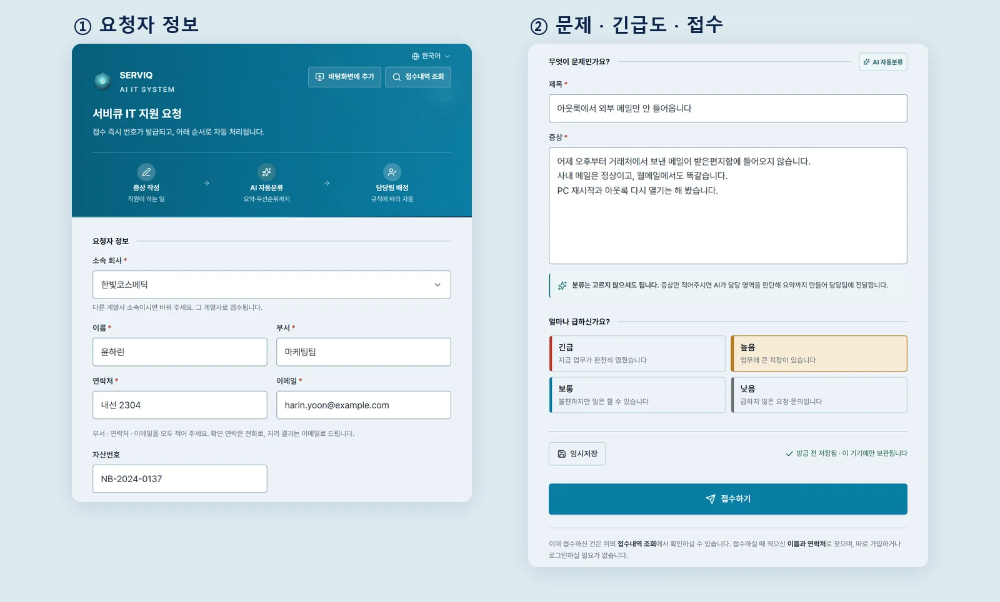
직원은 로그인 없이 회사 접수 링크에서 문제를 적습니다.
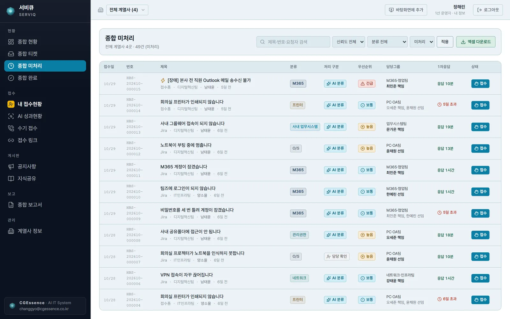
모든 계열사의 접수가 한 목록에 모입니다.
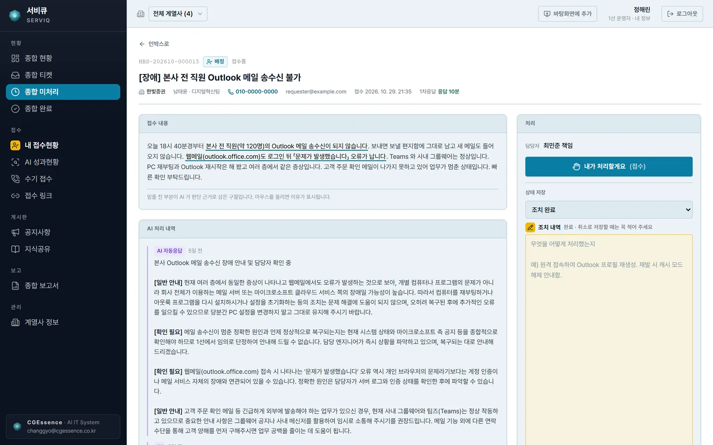
접수 내용 옆에 AI가 정리한 요약과 안내가 함께 있습니다.
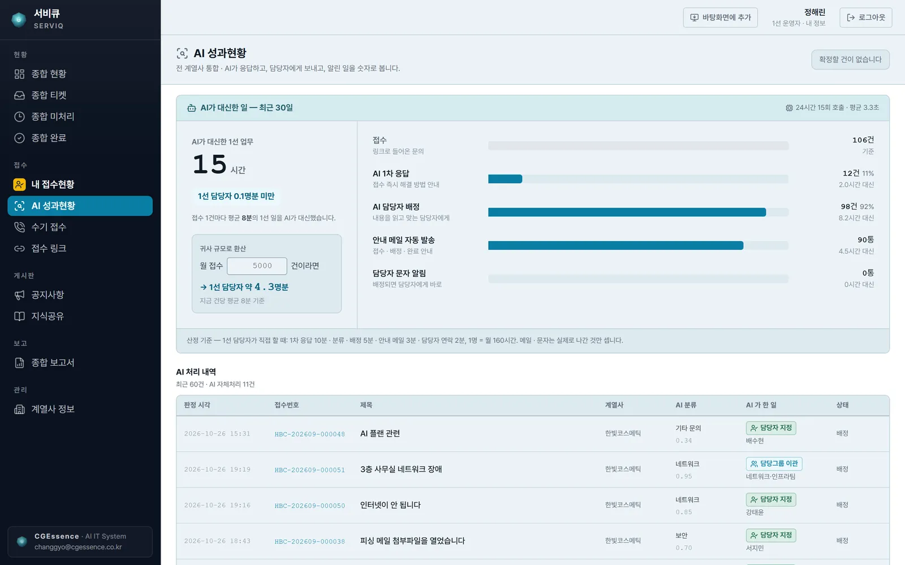
AI가 무엇을 대신했는지 숫자로 봅니다.
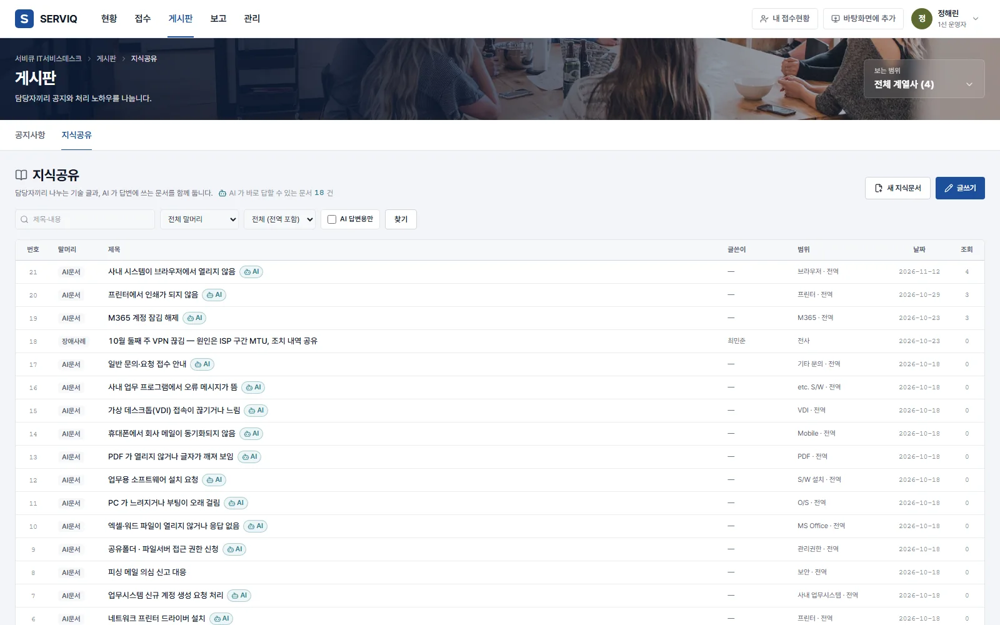
한 번 해결한 방법을 팀의 지식으로 남깁니다.
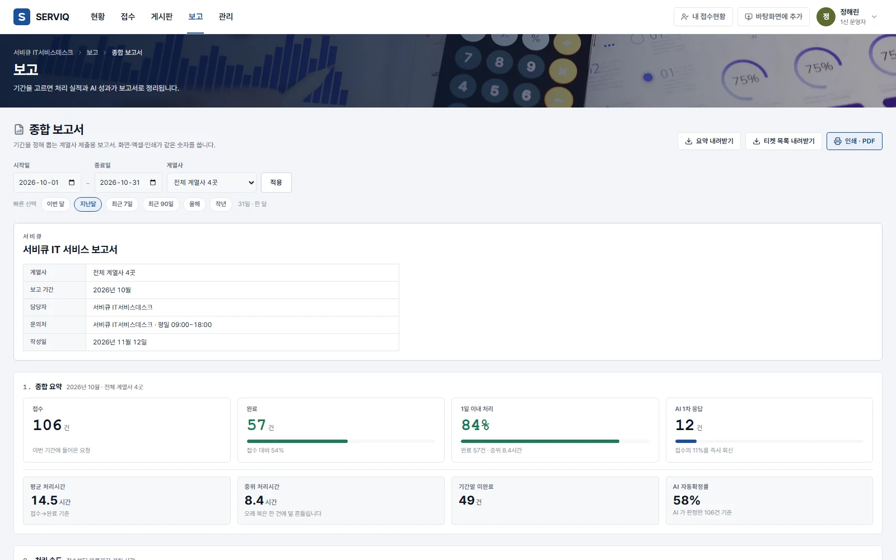
월간 보고를 따로 만들지 않아도 됩니다.
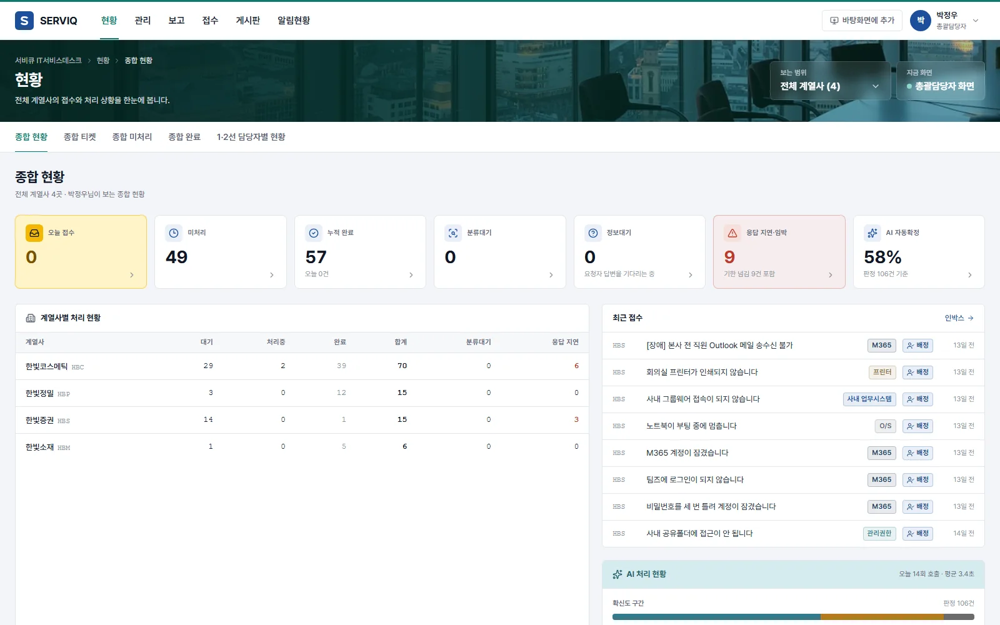
고객사의 IT 총괄담당자는 따로 들어와 전체를 봅니다.
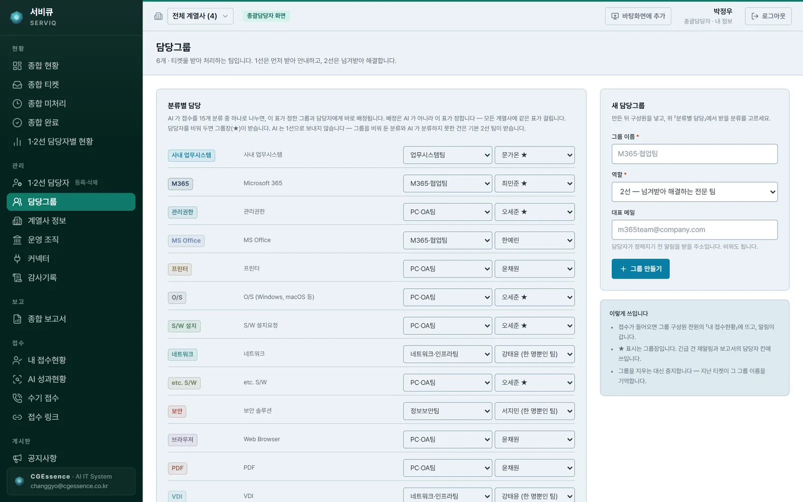
분류마다 어느 팀, 누구에게 갈지 표 한 장으로 정합니다.
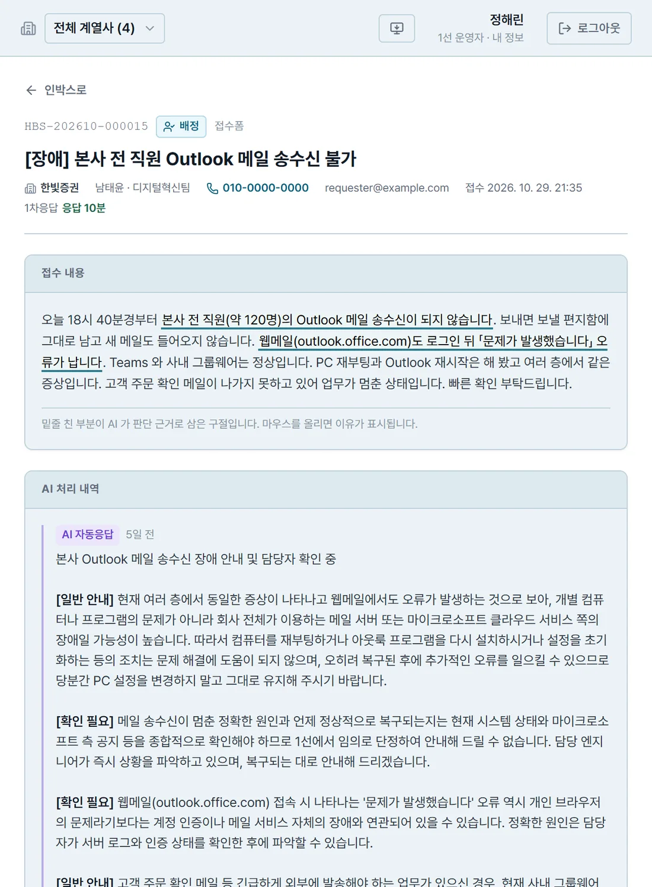
접수 내용을 읽은 AI가 한 줄로 요약하고, 직원이 바로 해 볼 수 있는 일반 안내와 담당자가 확인해야 할 점을 나눠 적습니다. 담당자는 처음부터 다시 묻지 않고 바로 판단합니다.
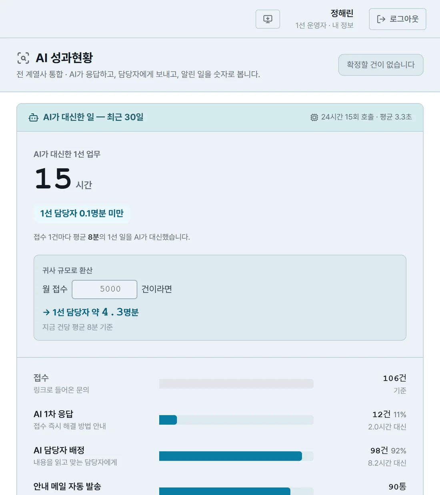
AI 1차 응답, 담당자 배정, 안내 메일이 몇 건이었는지, 그 일을 사람이 했다면 몇 시간이었을지 계산해 보여 줍니다. 우리 회사 월 접수 건수를 넣으면 몇 명분의 일인지도 봅니다.
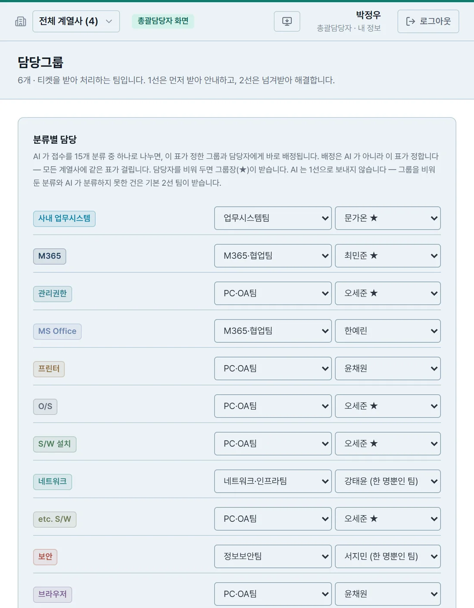
M365 · PC/OA · 네트워크 · 보안 · 업무시스템처럼 분류마다 담당 팀과 담당자를 정해 두면, AI가 나눈 분류대로 배정됩니다. 배정되면 담당자에게 문자 · 텔레그램 알림이 갑니다.
접수 화면은 로그인이 필요 없고 휴대폰 폭에 맞춰집니다. 자리에 없어도 문제를 적어 보내고, 처리 상황을 직접 확인합니다.
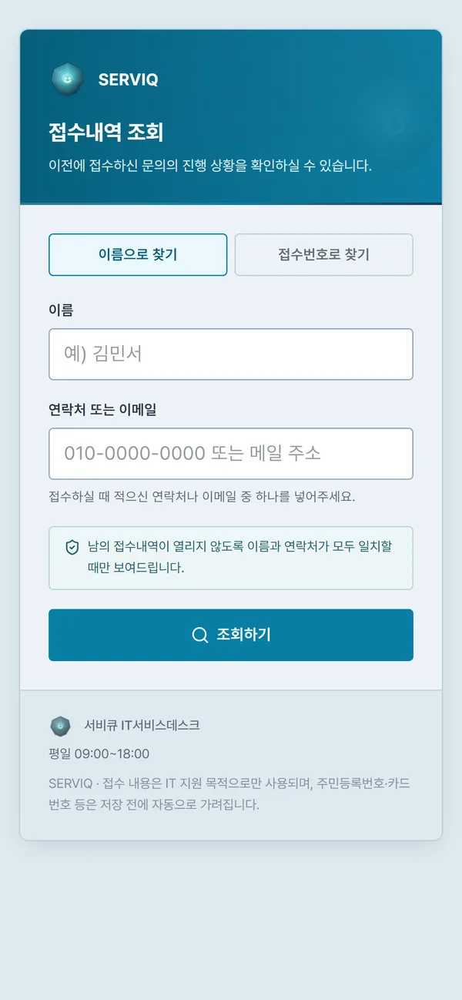
요청하는 직원, 처리하는 담당자, 전체를 보는 총괄담당자에게 각자의 화면이 있습니다.
로그인 없이 접수 링크로
처리 담당자 콘솔
고객사 IT 책임자 전용 화면
계열사 담당자 계정은 자기 회사 접수만 봅니다. 그룹 전체는 총괄담당자만 봅니다.
처리 담당자와 총괄담당자는 로그인 문부터 따로 있고, 설정 메뉴는 권한이 있는 계정에만 열립니다.
접수마다 처리 이력이 쌓이고, 계정 · 설정을 바꾼 일은 감사 기록으로 남습니다.
서버를 따로 준비하지 않고, 서비큐에 우리 회사 공간을 열어 바로 시작합니다.
임직원 수와 지금 IT 문의를 받는 방식을 들려주시면, 실제 화면으로 맞는지 함께 봅니다.
회사 · 계열사를 등록하면 계열사마다 접수 링크가 생깁니다.
1 · 2선 담당자 계정을 만들고, 분류마다 담당 팀과 담당자를 정합니다.
직원은 접수 링크를 바탕화면에 추가해 두고, 문제가 생기면 바로 적어 보냅니다.
아니요. 직원은 회사 접수 링크에서 이름 · 부서 · 연락처를 적어 접수하고, 이름 · 연락처나 접수번호로 내역을 조회합니다. 계정은 처리 담당자와 총괄담당자에게만 있습니다.
메일 · 전화로 받은 문의는 담당자가 「수기 접수」로 대신 등록합니다. 이때도 AI 분류 · 요약은 똑같이 붙습니다. 다른 업무 시스템과는 웹훅으로 연결할 수 있습니다.
분류 · 요약 · 안내에는 외부 AI 서비스(Gemini · Claude API)를 씁니다. 그래서 접수 내용이 AI 판단을 위해 이 서비스로 전달됩니다. 사내 서버에 설치하는 경우에도 AI 판단은 같은 API를 거칩니다.
네. 계열사마다 접수 링크와 담당 조직을 나누고, 그룹 전체 현황은 총괄담당자가 한 화면에서 봅니다.
네. 견적 요청을 주시면 우리 회사 전용 서버와 회사 도메인으로 따로 구축해 드립니다. 필요한 기능을 더하고, 구독하며 쓰던 접수 · 처리 이력과 담당 조직은 그대로 옮겨 드립니다. 구축이 끝나면 구독과 분리된 우리 회사만의 서비스데스크가 됩니다.
월 구독(임대형)으로 쓰시며, 임직원 수와 계열사 수에 따라 달라집니다. 도입 문의로 알려 주시면 견적과 함께 안내드립니다.
완성된 서비큐를 월 구독으로 바로 쓰시거나, 우리 회사에 맞게 기능을 더해 구축합니다.
바로 쓰기
이용 임직원 수에 따른 월 구독
구독 센터에서 바로 신청하면, 영업일 1일 안에 우리 회사 전용 주소 · 관리자 계정과 설치 파일을 메일로 보내 드립니다. 설치하면 바탕화면에 아이콘이 생깁니다.
우리 회사에 맞게
견적 요청 → 상담 → 견적서 → 구축
서비큐를 바탕으로 우리 회사 업무에 맞는 기능을 더하거나, 화면 · 양식을 바꾸거나, 쓰고 있는 다른 시스템과 연결합니다. 견적 요청 메일을 보내 주시면 상담 뒤 견적서를 드리고, CGEssence 가 직접 찾아가 구축합니다.
임직원 수와 지금 IT 문의를 받는 방식을 알려 주시면, 시연 화면과 함께 도입 방법을 하루 안에 답변드립니다.